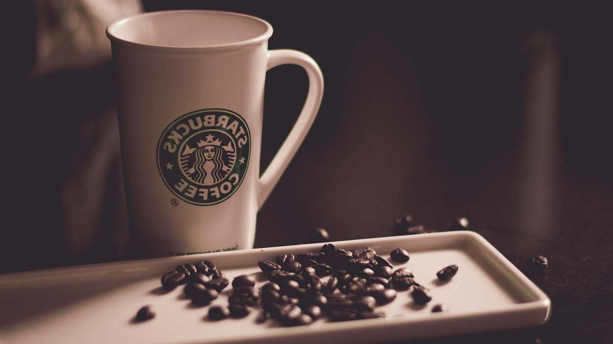
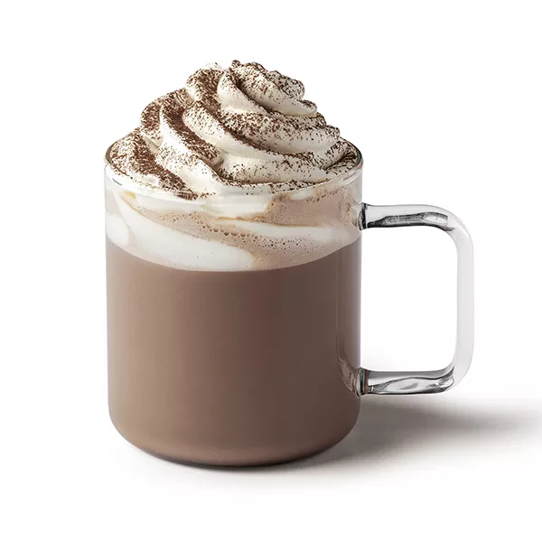
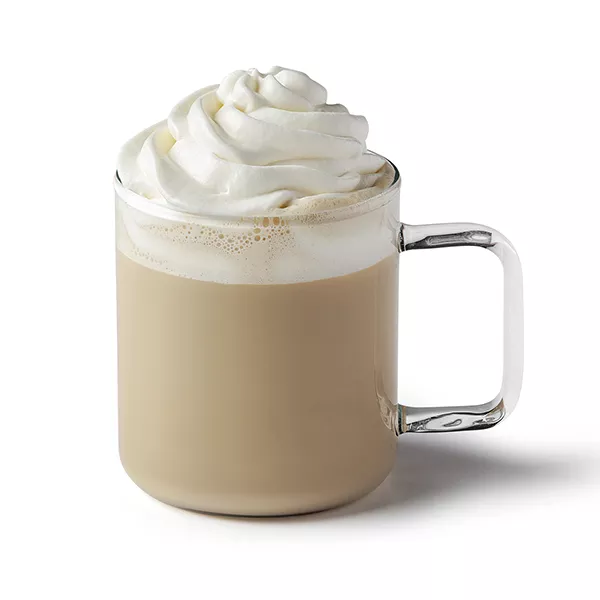
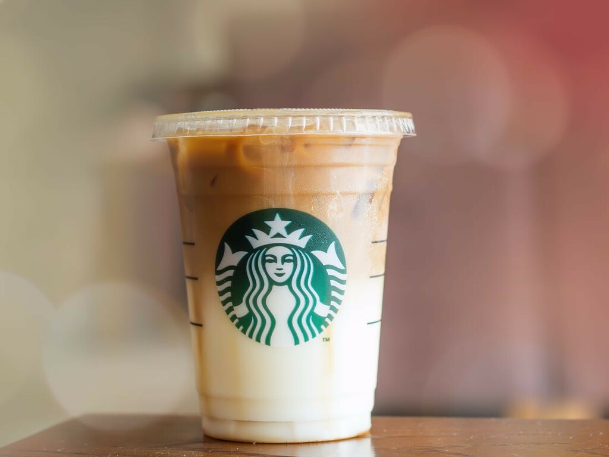
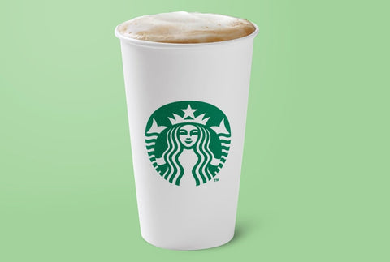

~ Starbucks ☕️ ~
À la découverte de la chaine de café américaine
Starbucks c'est la référence en terme de cafés et de thés
En savoir plus ☕️
Starbucks ? Qu'est-ce que c'est ?
Starbucks Corporation est une chaîne de cafés américaine fondée en 1971. En partie en franchise, il s'agit de la plus grande chaîne de ce genre dans le monde, avec 32 180 établissements implantés dans 78 pays, dont 18 235 sur le continent Américain. Les établissements Starbucks vendent exclusivement leur propre marque de café (moulu ou en grains), du thé, des boissons, des pâtisseries, des ustensiles et des machines à café, mais l'entreprise vise principalement à « offrir une expérience-consommateur » (deliver consumer experience en anglais), c’est-à-dire de proposer à sa clientèle un service unique qu’elle ne retrouvera pas dans les cafés d’une autre enseigne (confort, calme…).
Voici une petite vidéo de présentation de la marque.
Les produits d'hiver❄️
En effet, Starbucks propose des produits divers en fonction des saisons. En hiver, la marque propose davantage de produits chauds. Voici la gamme de produits d'hiver proposés et sa description.
Les cafés : les cafés Starbucks de Torréfaction Blonde éveillent les sens avec volupté et offrent une tasse accessible et savoureuse avec de légères notes de torréfaction. Doux et équilibrés, les cafés de torréfaction moyenne sont parfaits pour chaque pause-café. Corsés et riches, ces cafés présentent des saveurs robustes et l'essence caractéristique d'une torréfaction très intense
Le fameux chocolat chaud : pour les nostalgiques de l'enfance : du lait (animal ou végétal) du bon cacao et une touche de chantilly
Le mocha : une boisson encore très gourmande : du café, du sirop de chocolat et de la chantilly , elleest la boisson parfaite au goûter.
Le Caramel Macchiato : c'est la boisson chaude que vont adorer les fans de caramel... de la vanille, du lait chaud, du café, et évidemment, on parsème le tout de caramel... Que dire de plus ?
Le chai latté : cette boisson chaude devrait ravir les personnes qui aiment le thé, mais que ça manque de caractère. On rajoute un peu de lait, de la vanille, des épices et le thé passe du « bof » à « wahou » !
Les produits d'été☀️
En été, Starbucks propose davantage de produits glacé. Voici la gamme de produits d'été proposés et sa description.
Beaucoup de boissons chaudes d'hiver sont disponibles en version glacée.
Parmis les indipensables de l'été on retrouve les fameux refreshas avec plusieurs goûts disponibles: Stawberry Açaï, Pink Coconut, Cool Lime, Very Berry et notre nouveauté Mango Dragonfruit.


Pour une touche plus douce on peut aussi se tourner vers les frappuccinos. Encore une fois il y en a pour tout les goûts avec ou sans café : Choco Chip, Coffee, Espresso, Café Caramel, Mocha, Mocha Blanc, Cookies & Cream, Crème Choco Chip, Coco Chip, Fraise à la Crème, Vanille, Crème Caramel, Crème Chocolat, Crème Chocolat Blanc, Chai Tea, Matcha.

Si vous n'êtes toujours pas satisfait par ces propositions nous avons une solution ! Les thés glacés et encore une fois avec pleins de saveurs : Peach Citrus Green Tea, Blackberry Mojito Green Tea, Green Tea,Black Tea, Hibiscus Tea


~Le merchandising🥤~
Le voici 👇
Les tasses


Les gourdes


Les collections